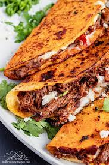

Quesabirria Tacos
 Description
Now it is time to learn what put birria on the map! Birria has become popular in America because of the infamous tacos.
Since you now know how to prepare the birria, you can now learn how to prepare the tacos. The hard part is out of the way and you are one step closer to eating quesabirria tacos in the comfort of your own home.
Ingredients
- Tortillas
- Quesillo
- Birria
- Cilantro
- Onion
- Optional Salsa
Steps
- Cut onion and cilantro into tiny pieces.
- Shred the quesillo.
- Dunk a tortilla in the birria broth (or consume as it is known as) to get all of the tortilla's sides.
- Put the tortilla on a medium high pan.
- After a minute, flip the tortilla. Once filled, put the birria meat and the shredded quesillo on the torilla.
- Fold the tortilla in half so the birria and quesillo is enclosed.
- Flip the now prepared taco once more. Once flipped, look to see if the quesillo is starting to melt. If the quesillo is melting, take the taco off the pan. If it is not melting, wait until the quesillo is starting to melt.
- Put as much cilantro, onion and salsa on your taco as you like.
- Repeat steps 3-8 for as many more tacos as you like
- You now have quesabirria tacos!